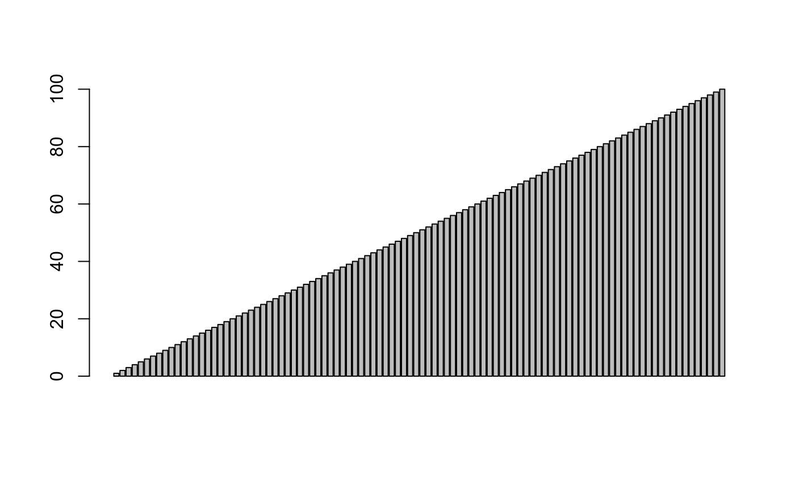

MFM-R-M2.Rmd
Namanya mungkin terdengar seperti sesuatu yang rumit, tetapi sebuah vektor hanyalah sebuah sekumpulan nilai. R bergantung pada vektor untuk banyak operasinya. Ini termasuk ploting.
2.1 Vector
Nilai vektor bisa berupa angka, string, nilai logis atau lainnya, asalkan mereka mempunyai tipe yang sama. Coba buat vektor angka, seperti ini:
## [1] 4 7 9Fungsi c (c adalah kependekan dari Combine) membuat sebuah vektor baru dengan menggabungkan sekumpulan nilai. Sekarang coba buat vektor yang berisi karakter:
## [1] "a" "b" "v"Vektor tidak dapat menyimpan nilai dengan tipe yang berbeda, coba buat vector dengan tipe yang berbeda-beda:
## [1] "1" "TRUE" "three"###Jump #3###
- Create a vector named boolean_vector that contains the three elements: TRUE, FALSE and TRUE (in that order)
## [1] TRUE FALSE TRUEFor poker_vector:
- On Monday you won $140
- Tuesday you lost $50
- Wednesday you won $20
- Thursday you lost $120
- Friday you won $240
For roulette_vector:
- On Monday you lost $24
- Tuesday you lost $50
- Wednesday you won $100
- Thursday you lost $350
- Friday you won $10
Transform above list into vector and have R simply print the vector.
## [1] 140 -50 20 -120 240## [1] 230## [1] 46## [1] -24 -50 100 -350 10## [1] -314## [1] -62.8Semua nilai dikonversi ke satu tipe yaitu karakter, sehingga vektor akan dapat menampung semuanya.
2.2 Sequence Vector
Jika teman-teman memerlukan vector dengan urutan angka, teman-teman dapat membuatnya dengan notasi start:end. Mari buat vector dengan nilai dari 5 hingga 9:
## [1] 5 6 7 8 9Cara lain untuk membuat vector yang berisi urutan angka adalah dengan fungsi seq. Coba kita lakukan hal yang sama dengan diatas dengan seq,
## [1] 5 6 7 8 9seq, juga memungkinkan teman-teman untuk menggunakan increaments selain 1. Cobalah dengan 0,5:
## [1] 5.0 5.5 6.0 6.5 7.0 7.5 8.0 8.5 9.0Sekarang coba buat vector dengan bilangan bulat dari 9 ke 5 (secara menurun)
## [1] 9 8 7 6 52.3 Vector Access
Kita akan membuat vector dengan beberapa string di dalamnya dan menyimpannya dalam variable sentence.
Teman-teman dapat mengambil nilai individu dalam vektor dengan memberikan indeks numerik dengan menggunakan tanda kurung siku-siku. Cobalah mendapatkan nilai pada indeks ketiga:
## [1] "walk" "the" "plank"## [1] "plank"Pada banyak bahasa pemrograman indeks array dimulai dengan 0, tapi di bahasa pemrograman R, indeks array dimulai dari 1. Untuk mendapatkan nilai pertama, dapat menggunakan cara:
## [1] "walk"## [1] "walk" "the" "plank"Teman-teman dapat menetapkan nilai baru dalam vektor yang ada. Cobalah ubah nilai indeks ketiga menjadi “dog”:
## [1] "walk" "the" "dog"Kita juga bisa menambahkan nilai baru di akhir vector. Mari menambahkan kata keempat:
## [1] "walk" "the" "dog" "to"Teman-teman dapat menggunakan kurung siku untuk mengakses banyak nilai dalam sebuah vector. Coba dapatkan nilai indeks ke-1 dan ke-3:
## [1] "walk" "dog"## [1] "walk" "the" "dog" "to"Ini berarti teman-teman dapat mengakses nilai indeks ke-2 sampai ke-4:
## [1] "the" "dog" "to"teman-teman juga dapat menggunakan range nilai:
## [1] "walk" "the" "dog" "to" "the" "poop" "deck"Sekarang coba akses nilai indeks ke-6
## [1] "poop"## [1] "walk" "the" "dog" "to" "the" "poop" "deck"2.4 Vector Names
Untuk challenge kali ini, buatlah vektor yang berisi 3 nilai dengan tipe karakter/string dan simpan dalam variabel ranks. Teman-teman dapat menetapkan nama ke elemen vektor dengan melewatkan vektor kedua dengan fungsi names, seperti:
## first second third
## 1 2 3Menetapkan nama untuk sebuah vektor dapat berguna sebagai label untuk data. Di bawah ini, teman-teman dapat melihat seperti apa vektor kita sekarang. Teman-teman juga dapat menggunakan nama untuk mengakses nilai-nilai vektor. Cobalah akses nilai indeks ke-1 dengan menggunakan “first”:
## [1] 1Sekarang isi nilai saat ini untuk indeks “third” dengan nilai yang berbeda dengan sebelumnya:
## first second third
## 1 2 4###Jump #4###
For poker_vector:
- On Monday you won $140
- Tuesday you lost $50
- Wednesday you won $20
- Thursday you lost $120
- Friday you won $240
For roulette_vector:
- On Monday you lost $24
- Tuesday you lost $50
- Wednesday you won $100
- Thursday you lost $350
- Friday you won $10
Transform above list into vector and add names on it and have R simply print the vector.
days <- c("Monday", "Tuesday", "Wednesday", "Thursday", "Friday")
poker_vector <- c(140, -50, 20, -120, 240)
names(poker_vector) <- days
poker_vector## Monday Tuesday Wednesday Thursday Friday
## 140 -50 20 -120 240## Monday Tuesday Wednesday Thursday Friday
## -24 -50 100 -350 102.5 Plotting One Vector
Fungsi barplot menggambar chart menggunakan nilai yang berasal dari vector. Kita akan membuat sebuah vector dan menyimpannya di variabel vesselSunk.
Sekarang coba lewatkan vector yang sudah kita buat kedalam fungsi barplot:
Jika teman-teman menetapkan nama pada vector diatas. R akan menggunakan nama-nama itu sebagai label di barplot.
Sekarang, jika teman-teman memanggil barplot dengan melewatkan vector vesselSunk lagi, teman-teman akan melihat label pada sumbu x:
Sekarang, coba panggil barplot dengan vektor bilangan bulat mulai dari 1 hingga 100:

2.6 Vector Math
Sebagian besar operasi aritmatika bekerja baik pada nilai satuan atau pada vector. Kita akan membuat vector sampel lain untuk teman-teman gunakan dan menyimpannya dalam variabel a.
Jika teman-teman menambahkan nilai skalar (nilai satuan) pada sebuah vector, maka nilai skalar akan ditambahkan ke setiap nilai dalam vektor, mengembalikan vektor baru dengan nilai hasil penambahan. Coba tambahkan nilai 1 ke setiap elemen di vector:
## [1] 2 3 4Hal yang sama berlaku untuk pembagian, perkalian atau setiap operasi dasar aritmatika. Sekarang coba bagi vector kita dengan 2:
## [1] 0.5 1.0 1.5Sekarang coba kali vector kita dengan 2:
## [1] 2 4 6Jika teman-teman menambahkan dua vektor, R akan menambahkan nilai dari kedua vector tersebut. Kita akan buat vector kedua dan menyimpannya di variabel b.
Sekarang coba tambahkan vector a dan b:
## [1] 5 7 9Sekarang coba kurangi vector a oleh vector b:
## [1] -3 -3 -3Teman-teman juga dapat mengambil dua vektor dan membandingkan nilainya:
## [1] TRUE FALSE TRUEPerhatikan bahwa R tidak menguji apakah keseluruhan vector sama, tapi melakukan pengecekan satu-satu terhadap nilai vector satu sama lain.
## [1] TRUE TRUE TRUEFungsi juga dapat bekerja dengan nilai skalar ataupun vector, coba dapatkan nilai sinus untuk tiap elemen vector a:
## [1] 0.8414710 0.9092974 0.1411200Sekarang coba untuk mendapatkan akar pangkat dua dari vector a:
## [1] 1.000000 1.414214 1.7320512.7 NA Values
Kadang-kadang, ketika bekerja dengan data sampel nilai yang diberikan tidak tersedia. Tetapi bukan ide yang baik, untuk membuang nilai-nilai tersebut. R memiliki nilai yang mampu menunjukkan sampel yang tidak tersedia: NA. Banyak fungsi bekerja dengan vektor memperlakukan nilai ini secara khusus.
Kita akan membuat vektor dengan nilai sample yang hilang dan menyimpannya dalam variabel a
Cobalah untuk mendapatkan jumlah dari vector a dan lihat hasilnya:
## [1] NACoba panggil sum lagi dengan na.rm diisi nilai TRUE:
## [1] 20